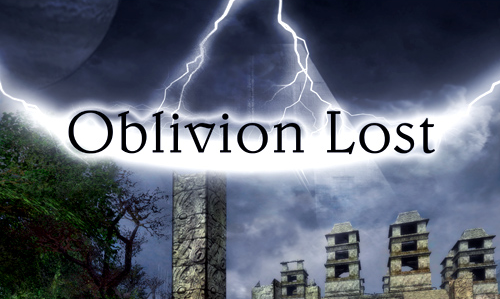
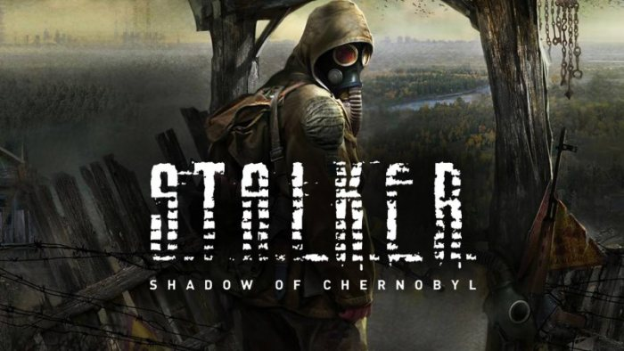
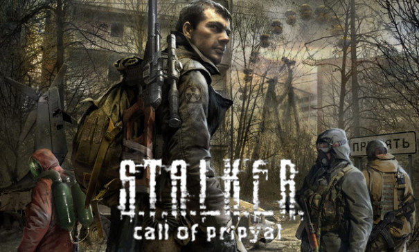

Рождение игровой вселенной S.T.A.L.K.E.R.
Начало. S.T.A.L.K.E.R.: Тень Чернобыля.
История создания игры началась ещё в далёком 2001-м году – тогда GSC приняли решение о начале разработки игры под названием Oblivion Lost… Был разработан движок X-Ray, который выдавал весьма и весьма качественное изображение и поддерживал почти все современные, на то время, технологии. Что же касается сюжета, то речь тогда шла об иных мирах, всяческого рода телепортационных порталах - Чернобыля дело тогда вообще не касалось. Одной из сборок той версии игры удалось овладеть фэн-коммьюнити. Как это произошло остаётся загадкой, но так или иначе, билд 1096 движка X-Ray с одной картой попал в руки интернет-пользователей. Сюжет утекшего 1096 вертелся вокруг заброшенных построек ацтеков и отлично демонстрировал движок, мощный и современный на то время.

Всё изменилось уже в следующем 2002-м году. Тогда сотрудники GSC посетили Чернобыльскую Зону, в том числе саму АЭС. Путешествие произвело на них неизгладимое впечатление, и именно эта поездка кардинально изменила дальнейшую судьбу игры Oblivion Lost. Всего лишь за несколько месяцев GSC полностью поменяли концепт игры, и теперь она называлась Stalker: Oblivion Lost. Ещё через некоторое время название сменили уже на «S.T.A.L.K.E.R.: Oblivion Lost», заложив начало серии игр. Но тогда ещё никто не думал о серии игр, разработчики активно работали над игровым пространством и обильно снабжали коммьюнити скриншотами и видеороликами. Был немного переработан движок, в частности, его графическая часть. И снова утекла одна из сборок игры – на тот момент номер был уже 1154. Теперь это был уже действительно «Сталкер» - в сборке присутствовали две локации, одна из которых вошла в финальную версию игры практически без изменений. Один из приближенных к GSC людей отметил, что моделировали локацию, ориентируясь на некоторые местности Крыма.

Приквел. S.T.A.L.K.E.R.:Чистое небо.
Разработка Clear Sky началась сразу же после завершения работ по Тень Чернобыля. Ведь не смотря на все косяки игрокам первая часть понравилась, количество фанатов росло и разработчики задумались о следующей части. Почти через год после релиза первой части мир увидел продолжение, Чистое небо. Сразу же стало заметно что графика была более подтянутой по сравнению с первой частью, текстуры объектов да и их количество радовало игроков, так же как и очень интересный сюжет. По мнению большинства игроков лучший во всей серии.

S.T.A.L.K.E.R.:Зов Припяти.
30 апреля 2009 года компания GSC Game World официально анонсировала игру на своём официальном сайте, раскрыв сюжет игры, множество её деталей и особенностей. В майском номере украинского журнала Gameplay № 5(45) было опубликовано обширное превью игры. Журналисты привели множество новых сведений об игре, описали сюжет, геймплейные нововведения, общий дизайн, кратко и предварительно оценили игру и попытались спрогнозировать её будущее. 15 мая 2009 года открылся официальный сайт игры. На нём сразу же появились системные требования игры. 9 сентября 2009 года старший маркетинговый менеджер AMD-ATi Ян МакНоутон (Ian “Cabrtosr” McNaughton) в своём блоге опубликовал статью «DirectX 11 — What to expect!», в которой описал преимущества и основные особенности Direct3D 11. В этой статье он заявил, что «S.T.A.L.K.E.R.: Зов Припяти», наряду с «BattleForge» и «Colin McRae: Dirt 2», будет использовать DirectX 11. 11 сентября 2009 года вышел новый игровой трейлер в стиле хоррора. 15 сентября 2009 года GSC Game World опубликовала пресс-релиз, в котором заявила, что игра «S.T.A.L.K.E.R.: Зов Припяти» отправилась в печать. 2 октября 2009 года, как и планировалось, игра официально поступила в продажу на платформе ПК.
